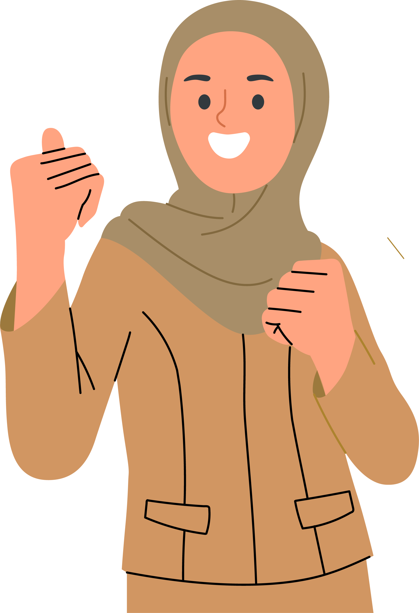

Semboyan Pendidikan Indonesia
"Ing ngarsa sung tuladha"
(di depan memberi teladan) – Pendidik harus dapat memberi contoh atau menjadi panutan.

"Ing Madya Mangun Karsa"
(di tengah membangun semangat) – Pendidik berada di tengah-tengah murid untuk membangun karsa, yaitu niat dan semangat.

"Tut Wuri Handayani"
(di belakang memberi dorongan) – Pendidik terus-menerus menuntun, menopang, dan menunjukkan arah yang benar bagi anak-anak didiknya.
Penulis
Melisa Mailoa, Alya Nurbaiti, Fajar Yusuf Rasdianto, Ani Mardatila, Ahmad Thovan Sugandi, M. Rizal Maslan
Editor
Dieqy Hasbi Widhana
Frontend Developer
Dedi Arief Wibisono